Trims¶
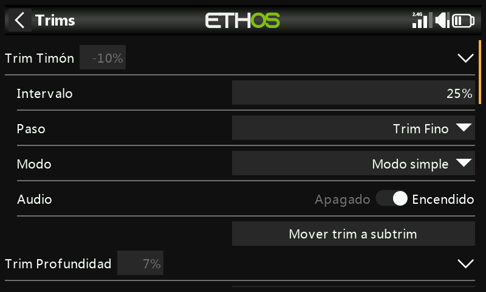
Configura el intervalo de compensado de cada palanca, el tamaño de paso y su comportamiento, además de los compensadores cruzados y el compensador instantáneo. La X20 Pro/R/RS y la X18 añaden dos interruptores de compensado adicionales, T5/T6, útiles para ajustes en vuelo más allá de las cuatro palancas principales:
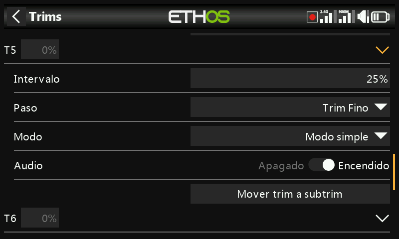
Cada palanca dispone de su propio conjunto independiente de ajustes de compensado.
Ajustes de compensado¶
- Range (intervalo de compensado) — por defecto ±25%, ajustable hasta el ±100% completo de la palanca. En la pantalla principal, un compensador con el intervalo por defecto muestra de −100 a 100; uno de intervalo completo (100%) muestra de −400 a 400 (4× el intervalo normal).
!!! warning Ampliar el intervalo implica que mantener pulsado un compensador demasiado tiempo puede añadir compensado suficiente como para hacer el modelo impilotable.
- Step (paso) — granularidad del interruptor de compensado: Extra fine (extra fino), Fine (fino), Medium (medio), Coarse (grueso), Exponential (exponencial: fino cerca del centro y grueso hacia los extremos) o Custom (personalizado: un porcentaje concreto por clic).
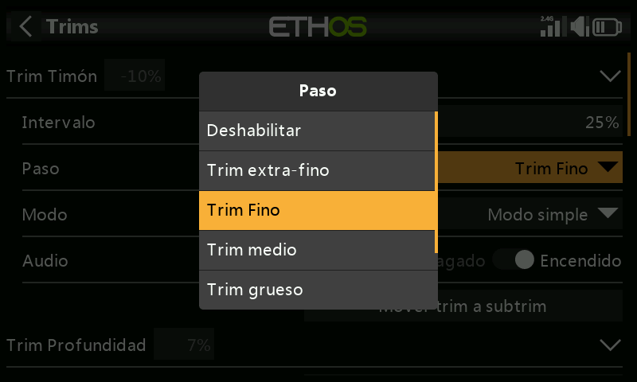
| Paso | µs por clic (intervalo 25%) |
|---|---|
| Extra fine | 0,5 |
| Fine | 1 |
| Medium | 2 |
| Coarse | 4 |
| Exponential | 0,3–16 |
Personalizado, con un intervalo del 25%: paso del 1% = 1 µs/clic, paso del 100% = 128 µs/clic. Con un intervalo del 100%: paso del 1% = 5 µs/clic, paso del 100% = 512 µs/clic.
Modo¶
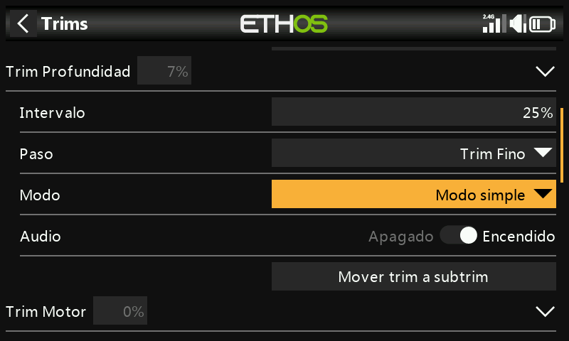
Por defecto, el compensador está siempre activo, pero Mode (modo) cambia ese comportamiento. Al cambiar de modo, el compensador se pone a 0.
- OFF — deshabilita por completo el compensador.
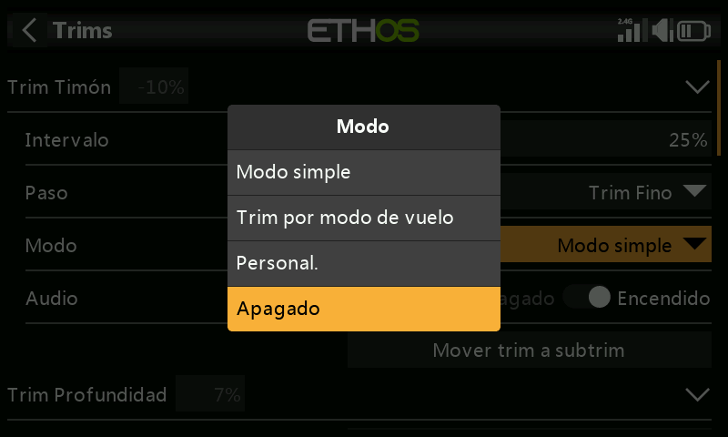
Útil, por ejemplo, en un modelo eléctrico que no necesita compensador de gases: el compensador liberado puede reasignarse para ajustar una Var.
- Easy (modo simple) — un único valor de compensado compartido en todos los modos de vuelo. Esto es normalmente apropiado para alerones y timón, ya que su trimado casi no varía en los distintos modos de vuelo.
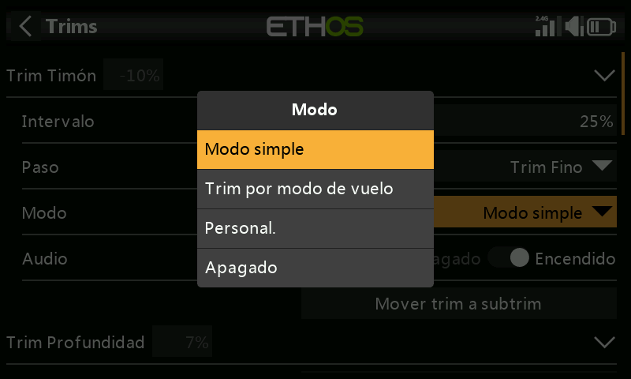
- Independiente por modo de vuelo — el compensador afectará tan sólo al modo de vuelo activo. Esta opción se usa normalmente para el compensado en profundidad, ya que su compensado típicamente variará en cada modo de vuelo, debido generalmente a la distinta configuración de las alas; de hecho, ésta suele ser la razón principal de tener que usar los modos de vuelo.
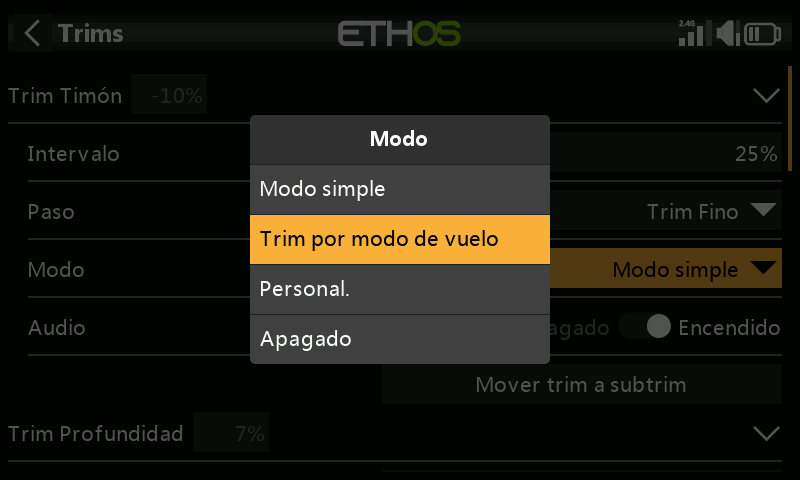
- Custom (personalizado) — el comportamiento del compensado se ajusta por completo a las necesidades de cada usuario, a partir de los comportamientos que uno mismo añada.
Comportamientos de compensado personalizados¶
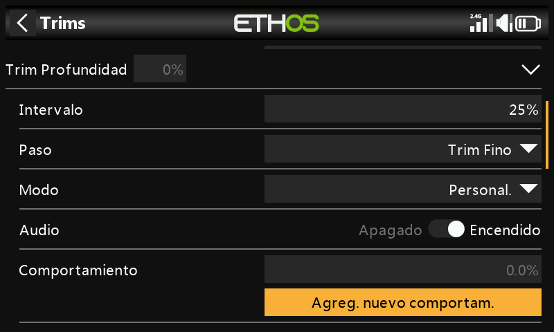
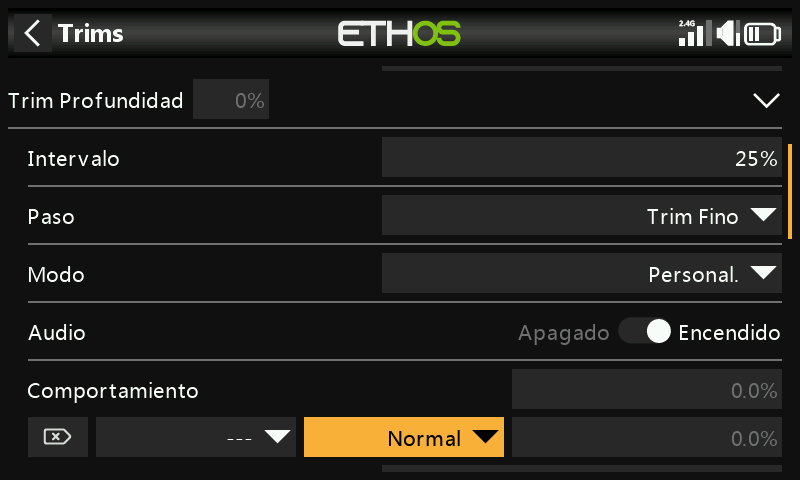
Cada línea de comportamiento tiene una condición y una de estas opciones:
- Unplugged (desenchufado) — deshabilita el compensador de forma selectiva bajo esa condición (en lugar de desactivarlo por completo con Mode = OFF).
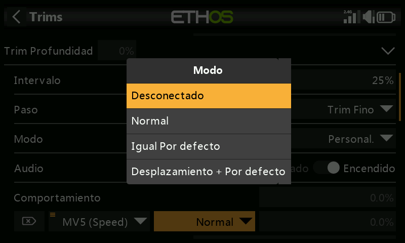
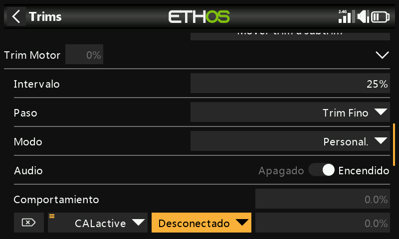
- Normal (por defecto) — comportamiento de compensado normal.
- Equal (to another trim) (igual a otro compensador) — el compensador de una condición específica sigue exactamente el valor del compensador de otra condición.
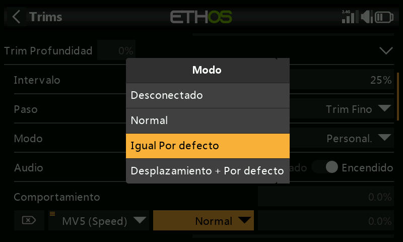
- Offset + (another trim) (desplazamiento + otro compensador) — el compensador de una condición específica se añade al compensador de otra condición.
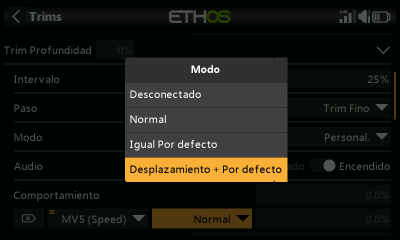
Ejemplo práctico — un planeador con un compensado base en profundidad en Cruise (crucero) y compensadores dependientes para Speed (velocidad) y Thermal (térmico):
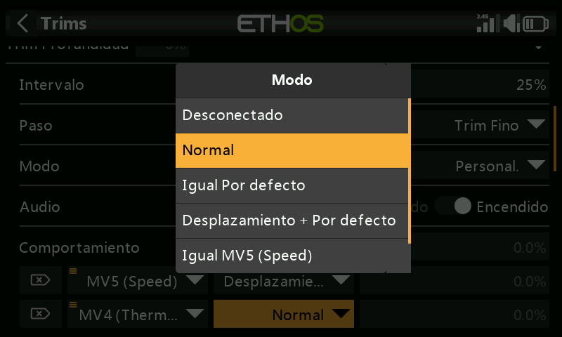
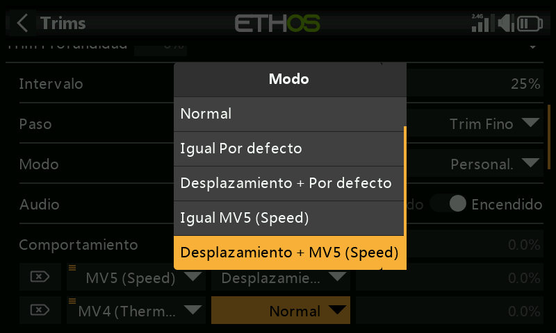
- Compense para vuelo nivelado en el modo por defecto (Cruise).
- Añada un comportamiento: Offset + Default, con la condición
FM5(Speed). A partir de ahora, cualquier ajuste del compensador que se haga en el modo Speed se guardará como un desplazamiento de los valores de compensado base de Cruise: distinto, pero dependiente de él.
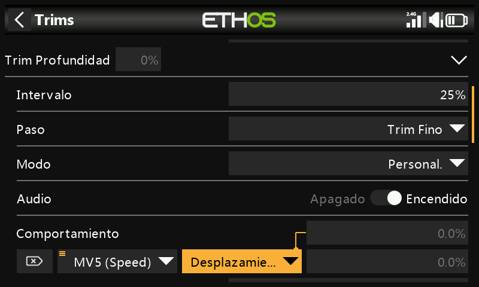
- Añada un segundo comportamiento: Offset + Default, con la condición
FM4(Thermal), de la misma forma. (Tenga en cuenta que, una vez creado el primer comportamiento, el cuadro de diálogo ofrece ademásEqual FM5(Speed)yOffset + FM5(Thermal), ya que ahora también puede referirse a ese comportamiento).
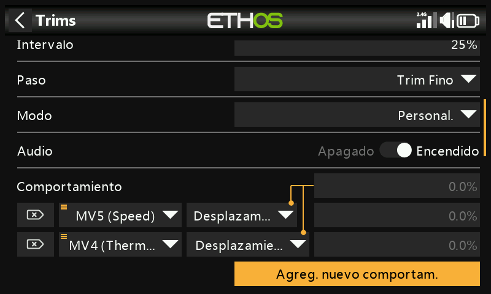
Con esta configuración, si más adelante hay que cambiar el compensado base de crucero (por ejemplo, porque se ha alterado el centro de gravedad), los compensadores de Speed y Thermal se desplazarán automáticamente en la misma medida, ya que son desplazamientos sobre él y no valores independientes.
- Audio — para un compensador reasignado a otro propósito se pueden desactivar los sonidos estándar de compensado, si ya no tiene sentido oírlos.
Compensadores adicionales¶
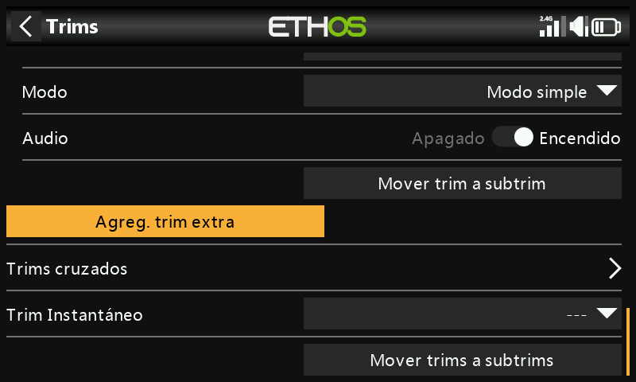
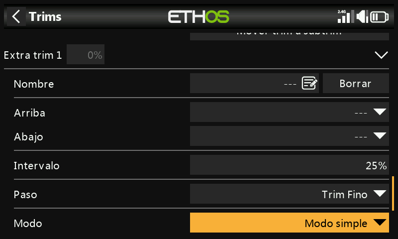
Add an extra trim (añadir un trim extra) crea un compensador más allá de las cuatro palancas estándar (y T5/T6): Name (nombre), las fuentes Up (arriba) y Down (abajo) que lo accionan, además de las mismas opciones Range, Step, Mode y Audio descritas arriba.
Compensadores cruzados¶
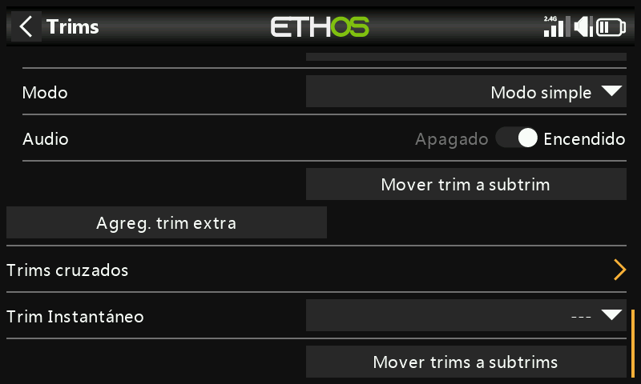
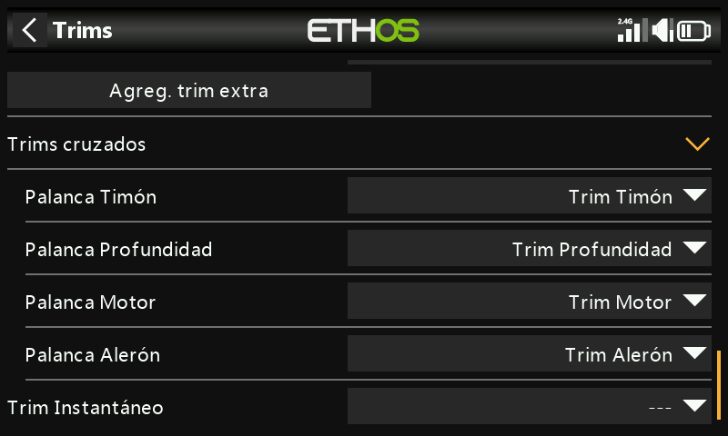
Permite elegir qué interruptor de compensado ajusta realmente cada palanca; es decir, que el compensado de una palanca se accione con un control físico de compensado distinto del habitual. (T5/T6 sólo están disponibles en la X20 Pro y la X18).
Compensador instantáneo¶
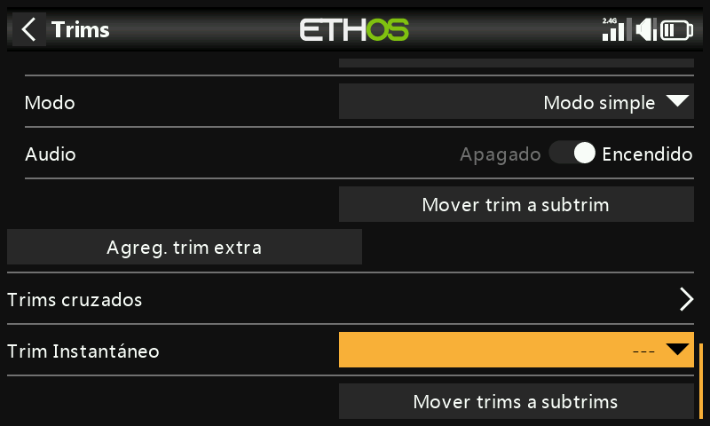
Mientras está activo, la posición actual de las palancas se añade a cada uno de sus respectivos compensadores por defecto (y cruzados). Es mejor asignarlo a un interruptor que pueda usarse sin tener que soltar las palancas: actívelo con el avión volando recto y nivelado para ajustar instantáneamente los compensadores, en lugar de pulsar repetidamente un compensador cuando el modelo está totalmente fuera de compensación. Desactívelo de nuevo después del vuelo de compensado, para evitar desajustar los compensadores accidentalmente más adelante.
Note
El compensador instantáneo sólo estará activo mientras se visualiza una de las pantallas principales.
Mover trims a subtrims¶
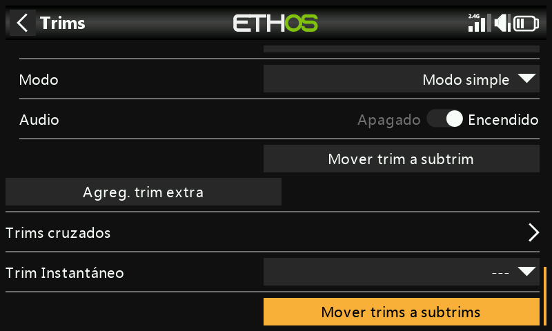
Después de compensar el modelo para vuelo nivelado, esta función mueve el valor de compensado de un canal (por ejemplo, el de profundidad) a su ajuste de Subtrim en Salidas y deja el compensador a cero en la pantalla principal: así se comprueba más fácilmente que los compensadores de vuelo no se han movido desde entonces.
Cuando se usan modos de vuelo, un canal puede tener más de un valor de compensado relevante, mientras que el Subtrim en Salidas es un ajuste global que se aplica a todos los modos de vuelo. Esta función lo tiene en cuenta: toma el compensado del modo de vuelo seleccionado en ese momento, lo transfiere al Subtrim, resetea ese compensador y ajusta los compensadores de todos los demás modos de vuelo en ese mismo canal para compensarlo, de forma que la posición real de las superficies de control en cada modo de vuelo acabe siendo la misma que antes.
Tip
Ejecute siempre esta función desde el mismo modo de vuelo «base» (por ejemplo, crucero en un velero) para mantener la coherencia: se puede repetir sin problema mientras se haga siempre así.
Valores grandes de compensadores y de subtrim producen movimientos muy asimétricos; es más inteligente corregir el problema mecánicamente. Procure que los reenvíos queden a 90° con las superficies en neutro (con la excepción de los flaps, en los que se sacrifica recorrido hacia arriba para maximizar el recorrido hacia abajo) y, una vez que el reenvío esté lo más cerca posible, use el PWM center (centrado PWM) para ajustarlo exactamente a 90°.